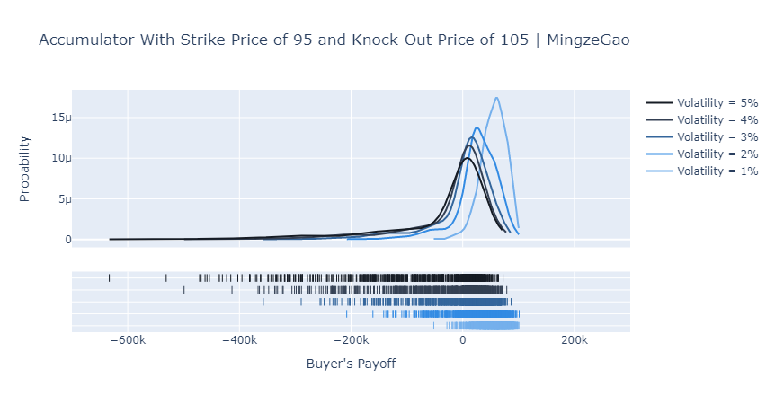
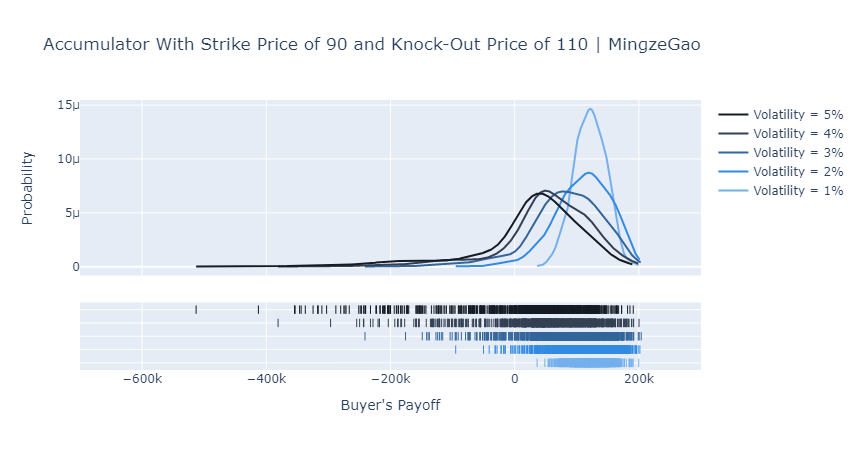

Accumulator Option Pricing
![]()
An accumulator is a financial derivative that is sometimes known as “I kill you later”. This post attempts to explain how it is structured and price it via Monte Carlo simulations in Python.
1. Overview of Accumulator
Like all derivatives, there are two parties involved in an accumulator, the buyer and the seller, both agree on a strike price that is usually at a discount to the prevailing market price of the underlying security at the time of contract origination.
- The buyer has the obligation to buy certain amount of the underlying security at the predetermined strike price.
- The seller has the obligation to sell the specified amount of the underlying security at the strike price to the buyer.
The accumulator is settled periodically throughout its term. At each settlement:
- If the market price of the underlying security is above the predetermined knock-out price, the contract is terminated.
- If the market price of the underlying security is between the knock-out price and the strike price, the buyer “accumulates” the underlying security at the strike price.
- If the market price of the underlying security is below the strike price, the buyer is obligated to buy the underlying security at the strike price at 2 (or more) times of the predetermined amount.
2. An Example 6-month Accumulator
Let’s make up an example so as to illustrate how it works.
2.1. Month 0
Suppose that I bought an accumulator from Sherry the seller today, where the underlying security is TSC (hypothetical ticker), currently trading at $100. The strike price is $90 and the knock-out price is $105. The amount of stocks that I can buy is 1,000 in each settlement. The accumulator lasts for 6 months and settles monthly.
2.2. Month 1
At the end of month 1, the market price of TSC is $102, which is between the strike price ($90) and the knock-out price ($105). I can buy 1,000 shares from Sherry at the strike price of $90 each and make a profit of \((\$102-\$90)\times 1000=\$12,000\).
2.3. Month 2
At the end of month 2, the market price of TSC is $95, which is between the strike price ($90) and the knock-out price ($105). I can buy 1,000 shares from Sherry at the strike price of $90 each and make a profit of \((\$95-\$90)\times1000=\$5,000\).
2.4. Month 3
At the end of month 3, the market price of TSC is $85, which is below the strike price ($90). I have to buy 2,000 shares from Sherry at the strike price of $90, making a loss of \((\$90-\$85)\times2000=\$10,000\).
2.5. Month 4
At the end of month 4, the market price of TSC is $88, which is below the strike price ($90). I have to buy 2,000 shares from Sherry at the strike price of $90, making a loss of \((\$90-\$88)\times2000=\$4,000\).
2.6. Month 5
At the end of month 5, the market price of TSC is $106, which is above the knock-out price, so the contract is terminated immediately. I cannot make any profit from Sherry any longer.
3. Some Observations
In the example above:
All these taken together, we can find that the buyer has:
- a limited upside potential because the potential gain is capped by the knock-out price and zero when knocked out, and
- a disproportional (limited) downside in that any loss is amplified by the doubled amount of shares he or she has to purchase from the seller when share price is below the strike.
But this is not the full story. Another hidden feature is that while the accumulator is terminated when the share price is above the knock-out price, the contract does not terminate when the buyer is at a loss until it matures. So, even though the maximum losses of both the buyer and the seller are fixed, but they differ significantly and disproportionately.
If so, why would anyone become interested in buying the contract? Potentially it’s because the strike is set to be lower at market price, therefore at the beginning the buyers always feel like they are taking advantages. They may also think that once the price increases to above the knock-out level, which might be set to slightly higher than market price, the contract is terminated so they are free of any loss.
However, the buyers often underestimate the probability of a price decline and how big the impact it will have on accumulator buyers. The “I kill you later” earns its name for a reason.
4. Some Math …
Let’s make some notations.
- Strike price is \(K\)
- Share price at time \(t\) is \(S_t\)
- Knock-out price is \(K^+\)
- The amount of shares to buy is:
- \(A\) when \(K<S_t<K^+\), and
- \(cA\) when \(S_t>K^+\), where \(c>1\)
- There are \(N\) settlements
So at each settlement, the payoff matrix conditional on the contract not terminated in the previous settlement is:
| Share Price | Buyer’s Payoff | Seller’s Payoff |
|---|---|---|
| \(S_t>K^+\) | 0 | 0 |
| \(K\le S_t\le K^+\) | \(A(S_t-K)\ge0\) | \(-A(S_t-K)\le0\) |
| \(S_t<K\) | \(c A(S_t-K)<0\) | \(-cA(S_t-K)>0\) |
However, deriving a closed-end analytical solution is not easy since there are many settlements in the contract and the total payoff is path-dependent (the knock out).1
1 There is a conference paper in 2009 discussing the issue and the PDF version is available here.
5. … A Simulation Approach
I am to going to use Monte Carlo simulations to find out the distribution of buyer’s payoff.
5.1. Assumptions
For simplicity, I’m going to make the following assumptions:
- the share price when the contract is signed \(S_t=100\).
- the strike price and the knock-out price are symmetric around $100.
- the strike price \(K=100-k\)
- the knock-out price \(K^+=100+k\)
- the contract lasts for a year with 12 settlements and each month end.
- the amount of shares to buy in each settlement:
- \(A=1,000\) if the share price at settlement is between the strike price and the knock-out price.
- \(A=2,000\) if the share prices settlement is below the strike price.
- the monthly stock returns follow a normal distribution with mean zero and a standard deviation of \(\sigma\).
Then, there are only two variables: \(k\) and \(\sigma\) that I will need to vary!
5.2. Core Code
The simulation code I write below leverages Numba to speed up the calculation.
For 1 million simulations per pair of \((k, \sigma)\), it takes about 2 seconds on my laptop with JIT and almost 1 minute without it.
import numpy as np
from collections import OrderedDict
from numba import int32, float32
from numba.experimental import jitclass
@jitclass(OrderedDict({
'times': int32,
'strike_price': float32,
'knock_out_price': float32,
'volatility': float32
}))
class FastSimulation:
def __init__(self, times, strike_price, knock_out_price, volatility):
self.times = times
self.strike_price = strike_price
self.knock_out_price = knock_out_price
self.volatility = volatility
def run(self):
np.random.seed(1)
buyer_payoffs = []
for i in range(self.times):
# generate 12 monthly returns from a normal distribution
# written this way as size parameter is not supported by numba
returns = [np.random.normal(
loc=0, scale=self.volatility)/100 + 1 for _ in range(12)]
# convert returns to a price array
prices = np.asarray(returns).cumprod() * 100
payoff = 0
for price in prices:
# the accumulator is terminated immediately
if price > self.knock_out_price:
break
payoff += self.buyer_payoff(price)
buyer_payoffs.append(payoff)
return buyer_payoffs
def buyer_payoff(self, share_price):
"Buyer payoff conditional on the accumulator not terminated"
if share_price > self.knock_out_price:
return 0
payoff = 1000 * (share_price - self.strike_price)
if self.strike_price <= share_price <= self.knock_out_price:
return payoff
else:
return payoff * 25.3. Results
Numbers are boring. So here I put two plots showing the distribution of the buyer’s payoffs. The Python code to generate the plots is as below (1000 simulations).
import plotly.figure_factory as ff
import plotly.graph_objs as go
from plotly.offline import download_plotlyjs, init_notebook_mode, plot, iplot
init_notebook_mode(connected=True)
hist_data, group_labels = [], []
for v in range(1, 6):
hist_data.append(FastSimulation(times=1_000, strike_price=95, knock_out_price=105, volatility=v).run())
group_labels.append(f'Volatility = {v}%')
colors = ['#75b0ec', '#338be3', '#34669c', '#344054', '#161c25']
# Create distplot with curve_type set to 'normal'
fig = ff.create_distplot(hist_data, group_labels, show_hist=False, colors=colors, curve_type="kde")
# Add title
fig['layout'].update(title='Accumulator With Strike Price of 95 and Knock-Out Price of 105 | MingzeGao',
xaxis=dict(title="Buyer's Payoff", range=[-700e3, 300e3]), yaxis=dict(title='Probability'))
# Plot!
iplot(fig)

6. Discussion
Apparently, the accumulator is a very interesting and sometimes evil derivative. From the plots above we can notice several things:
- When volatility is low, an accumulator gives the buyer an opportunity to accumulate shares at a discount and therefore positive payoffs.
- When volatility is high, the buyer’s payoff distribution becomes increasingly negatively skewed.
- The maximum potential payoff is capped and decreasing in volatility but VaR is increasing in the volatility.
- ……
Hence, as a buyer of an accumulator, you win small with low volatility but lose big and huge with high volatility. I don’t think any rational investor would like to take the long position. However, we do find exceptions, like CITIC Limited lost HK$15 billion in accumulators back in 2008.